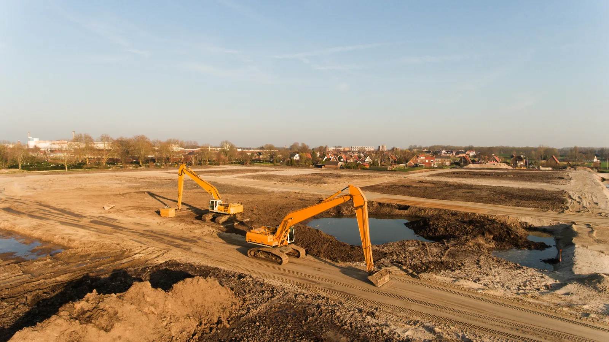

For sellers
Not much, and none of it commits you to anything. Send what you have and we will tell you what the assets are likely to do.
Six steps, and you are told what happens at each one before it happens.
Appraisal
You send the inventory or the description and any photographs. We confirm the assets suit auction and give you a read on likely interest and a realistic range.
Agree terms
We agree any reserves, the estimates and the sale timeline with you in writing before anything goes live. There is no commission and no selling fee to negotiate.
Listing
We build the listings from your inventory, descriptions and photographs. Nothing has to be moved, and where a formal figure is needed an independent professional valuation can be arranged.
Marketing and sale
Lots go live with published end times, marketed to our UK and overseas trade buyers. A bid in a lot's last ten minutes extends that lot, so late interest lifts the price instead of sniping it.
Payment to you
The buyer pays in full by bank transfer. On cleared funds we remit the hammer price together with any applicable VAT, ordinarily within 24 hours.
Collection
Only then is collection authorised, by appointment at your site, and you receive a settlement report lot by lot for your records.
We act as auctioneer and agent for you throughout, and the sale contract is between you and the buyer.
Commercial and industrial business assets. If a business uses it, there is usually a trade or export buyer for it.
Plant and machinery
Excavators, telehandlers, dumpers, rollers, forklifts and materials handling, whether it is one machine you have replaced or a fleet coming off hire.
Commercial vehicles and ex-fleet
Vans, tippers, dropsides, Lutons, rigids, tractor units and trailers, including vehicles coming off a renewal cycle.
Agricultural and farm machinery
Tractors, harvest and grass machinery, implements, trailers and farm vehicles, from a single tractor to a full farm dispersal.
Catering and commercial equipment
Cooking lines, combi ovens, refrigeration, warewashing, stainless benching and bar fittings, typically a whole kitchen at a time.
Industrial and workshop machinery
CNC machines, lathes, milling, metalworking, woodworking and the fitted contents of a working workshop.
Mixed business assets
IT, electricals, racking, office contents and everything else that comes with a site closure.
If you are not sure whether something is worth listing, send it anyway. It costs nothing to ask, and mixed lots often carry the odd item that surprises everyone.

We appraise each asset from the details and photographs you provide, then agree an estimate range and a reserve with you before the sale.
The estimate is a guide to the likely selling range, used to attract the right bidders. The reserve is the floor you set with us. We advise on it from what the market is doing for that asset, because a sensible reserve lets competition find the price while too high a one holds the bidding back before it starts.
You stay in control after the close as well. Where bidding stops below your reserve we bring you the highest bid, and you can take it or leave it. A lot that looks unsold on the day is often still sellable, and plenty are.
Where a formal figure is needed, for a lender, an insurer or a set of creditors, an independent professional valuation can be arranged alongside the achieved figures.
The pace is set by how quickly the asset information comes together, not by us. A clear list with photographs can be listed quickly; twenty unnumbered lines with no detail cannot.
Each sale publishes its own bidding window and its own end times, and we agree the timeline with you before anything goes live. If you are working backwards from a hard date, a lease ending or a site being handed back, tell us that first and we will build the plan around it.
Where a closure is moving fast we can list at short notice. The thing that slows a sale down is almost always missing information about the assets rather than the auction itself.
Yes. Online bidding opens the sale to trade buyers anywhere, and we are EORI registered, so an overseas buyer can bid on and export a UK asset without attending.
A wider pool of bidders tends to lift the price, and assets with thin demand here sometimes have strong demand abroad. Export buyers pay a VAT deposit that is refunded once they evidence the goods have left the UK, so the process is handled and your position is unaffected.
Well-specified assets with a clear history travel best, which is another reason the detail you send us at the start is worth getting right.
Send us an inventory or a description with any photographs, and tell us your timescale. We will confirm whether auction is the right route and set out a clear plan.
There is no cost to you at any stage, and nothing is committed until we have agreed the terms in writing. For an insolvency we can act at short notice: see asset disposal for administrators and receivers.